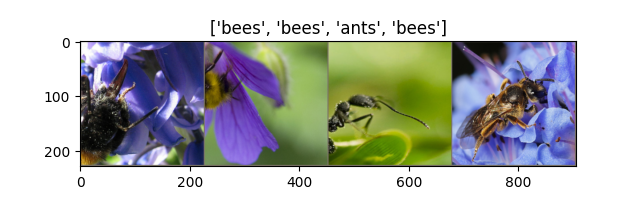
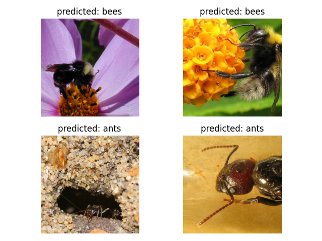

9.2 Transfer Learning
Transfer Learning for Computer Vision Tutorial
Created Date: 2025-06-23
In this tutorial, we will learn how to train a convolutional neural network for image classification using transfer learning. You can read more about the transfer learning at cs231n notes .
In practice, very few people train an entire Convolutional Network from scratch (with random initialization), because it is relatively rare to have a dataset of sufficient size. Instead, it is common to pretrain a ConvNet on a very large dataset (e.g. ImageNet , which contains 1.2 million images with 1000 categories), and then use the ConvNet either as an initialization or a fixed feature extractor for the task of interest.
These two major transfer learning scenarios look as follows:
Finetuning the ConvNet : Instead of random initialization, we initialize the network with a pretrained network, like the one that is trained on imagenet 1000 dataset. Rest of the training looks as usual.
ConvNet as fixed feature extractor : Here, we will freeze the weights for all of the network except that of the final fully connected layer. This last fully connected layer is replaced with a new one with random weights and only this layer is trained.
9.2.1 Load Data
We will use torchvision and torch.utils.data packages for loading the data.
The problem we’re going to solve today is to train a model to classify ants and bees. We have about 120 training images each for ants and bees. There are 75 validation images for each class. Usually, this is a very small dataset to generalize upon, if trained from scratch. Since we are using transfer learning, we should be able to generalize reasonably well.
This dataset is a very small subset of imagenet.
File simple_transfer.py downloads the data and extract it to the current data/ directory:
file_path = download.download(
data_url, sha1_hash="c6ff178de032ee56fa5b35c2a6a9005c934faba0"
)
print(file_path)
base_name = os.path.splitext(os.path.basename(file_path))[0]
extract_dir = os.path.join(os.path.dirname(file_path), base_name)
with zipfile.ZipFile(file_path, "r") as zip_ref:
names = zip_ref.namelist()
top_level_dirs = {name.split("/")[0] for name in names if "/" in name}
if len(top_level_dirs) == 1 and base_name in top_level_dirs:
zip_ref.extractall(os.path.dirname(file_path))
os.rename(os.path.join(os.path.dirname(file_path), base_name), extract_dir)
else:
os.makedirs(extract_dir, exist_ok=True)
zip_ref.extractall(extract_dir)
# print the contents of the extracted directory
for item in os.listdir(extract_dir):
item_path = os.path.join(extract_dir, item)
if os.path.isdir(item_path):
print(f"Directory: {item_path}")
else:
print(f"File: {item_path}")We print its sub-level results, which contains two directories, one for the train set and the other for the valid set:
Directory: ./data\hymenoptera_data\train Directory: ./data\hymenoptera_data\val
We can now load the data using torchvision’s ImageFolder and DataLoader:
# Load the data
print("Loading data...")
image_datasets = {
x: datasets.ImageFolder(os.path.join(extract_dir, x), data_transforms[x])
for x in ["train", "val"]
}
dataloaders = {
x: torch.utils.data.DataLoader(
image_datasets[x], batch_size=4, shuffle=True, num_workers=4
)
for x in ["train", "val"]
}
dataset_sizes = {x: len(image_datasets[x]) for x in ["train", "val"]}
class_names = image_datasets["train"].classes
print(f"Dataset sizes: {dataset_sizes}")
print(f"Class names: {class_names}")Dataset sizes: {'train': 244, 'val': 153}
Class names: ['ants', 'bees']
We also define the data augmentation and normalization for training and validation:
# Data augmentation and normalization for training
# Just normalization for validation
data_transforms = {
"train": transforms.Compose(
[
transforms.RandomResizedCrop(224),
transforms.RandomHorizontalFlip(),
transforms.ToTensor(),
transforms.Normalize([0.485, 0.456, 0.406], [0.229, 0.224, 0.225]),
]
),
"val": transforms.Compose(
[
transforms.Resize(256),
transforms.CenterCrop(224),
transforms.ToTensor(),
transforms.Normalize([0.485, 0.456, 0.406], [0.229, 0.224, 0.225]),
]
),
}Let’s visualize a few training images so as to understand the data augmentations:
def imshow(inp, title=None):
"""Display image for Tensor."""
inp = inp.numpy().transpose((1, 2, 0))
mean = numpy.array([0.485, 0.456, 0.406])
std = numpy.array([0.229, 0.224, 0.225])
inp = std * inp + mean
inp = numpy.clip(inp, 0, 1)
pyplot.imshow(inp)
if title is not None:
pyplot.title(title)
pyplot.pause(0.001) # pause a bit so that plots are updated
pyplot.show()# Get a batch of training data
inputs, classes = next(iter(dataloaders["train"]))
# Make a grid from batch
out = torchvision.utils.make_grid(inputs)
imshow(out, title=[class_names[x] for x in classes])
Figure 1 - Sample Images of Bees and Ants
9.2.2 Training the Model
Now, let’s write a general function to train a model. Here, we will illustrate:
Scheduling the learning rate
Saving the best model
In the following, parameter scheduler is an LR scheduler object from torch.optim.lr_scheduler :
def train_model(model, criterion, optimizer, scheduler, num_epochs=25):
since = time.time()
# Create a temporary directory to save training checkpoints
tempdir = 'temp/'
os.makedirs(tempdir, exist_ok=True)
best_model_params_path = os.path.join(tempdir, 'best_model_params.pt')
torch.save(model.state_dict(), best_model_params_path)
best_acc = 0.0
for epoch in range(num_epochs):
print(f'Epoch {epoch}/{num_epochs - 1}')
print('-' * 10)
# Each epoch has a training and validation phase
for phase in ['train', 'val']:
if phase == 'train':
model.train() # Set model to training mode
else:
model.eval() # Set model to evaluate mode
running_loss = 0.0
running_corrects = 0
# Iterate over data.
for inputs, labels in dataloaders[phase]:
inputs = inputs.to(device)
labels = labels.to(device)
# zero the parameter gradients
optimizer.zero_grad()
# forward
# track history if only in train
with torch.set_grad_enabled(phase == 'train'):
outputs = model(inputs)
_, preds = torch.max(outputs, 1)
loss = criterion(outputs, labels)
# backward + optimize only if in training phase
if phase == 'train':
loss.backward()
optimizer.step()
# statistics
running_loss += loss.item() * inputs.size(0)
running_corrects += torch.sum(preds == labels.data)
if phase == 'train':
scheduler.step()
epoch_loss = running_loss / dataset_sizes[phase]
epoch_acc = running_corrects.double() / dataset_sizes[phase]
print(f'{phase} Loss: {epoch_loss:.4f} Acc: {epoch_acc:.4f}')
# deep copy the model
if phase == 'val' and epoch_acc > best_acc:
best_acc = epoch_acc
torch.save(model.state_dict(), best_model_params_path)
print()
time_elapsed = time.time() - since
print(f'Training complete in {time_elapsed // 60:.0f}m {time_elapsed % 60:.0f}s')
print(f'Best val Acc: {best_acc:4f}')
# load best model weights
model.load_state_dict(torch.load(best_model_params_path, weights_only=True))
return modelThis is a typical neural network training process. We save the best training result in the best_model_params.pt file.
9.2.3 Finetuning the ConvNet
Load a pretrained model and reset final fully connected layer, we use torch.nn.Linear(num_ftrs, 2) replace the original fc layer:
print('Fine-tuning the convnet...')
model_ft = torchvision.models.resnet18(weights='IMAGENET1K_V1')
num_ftrs = model_ft.fc.in_features
# Here the size of each output sample is set to 2.
# Alternatively, it can be generalized to ``nn.Linear(num_ftrs, len(class_names))``.
model_ft.fc = torch.nn.Linear(num_ftrs, 2)
model_ft = model_ft.to(device)
criterion = torch.nn.CrossEntropyLoss()
# Observe that all parameters are being optimized
optimizer_ft = torch.optim.SGD(model_ft.parameters(), lr=0.001, momentum=0.9)
# Decay LR by a factor of 0.1 every 7 epochs
exp_lr_scheduler = torch.optim.lr_scheduler.StepLR(optimizer_ft, step_size=7, gamma=0.1)
model_ft = train_model(model_ft, criterion, optimizer_ft, exp_lr_scheduler,
num_epochs=25)Fine-tuning the convnet... Epoch 0/24 ---------- train Loss: 0.6527 Acc: 0.6680 val Loss: 0.3022 Acc: 0.8824 Epoch 1/24 ---------- train Loss: 0.5814 Acc: 0.7623 val Loss: 0.7254 Acc: 0.7647 Epoch 2/24 ---------- train Loss: 0.5852 Acc: 0.7828 val Loss: 0.2170 Acc: 0.9216 Epoch 3/24 ---------- train Loss: 0.5345 Acc: 0.7992 val Loss: 0.3637 Acc: 0.8824 Epoch 4/24 ---------- train Loss: 0.6848 Acc: 0.7623 val Loss: 0.3229 Acc: 0.8366 Epoch 5/24 ---------- train Loss: 0.5584 Acc: 0.7623 val Loss: 0.2349 Acc: 0.9020 Epoch 6/24 ---------- train Loss: 0.4407 Acc: 0.8074 val Loss: 0.3446 Acc: 0.8693 Epoch 7/24 ---------- train Loss: 0.3148 Acc: 0.8607 val Loss: 0.2936 Acc: 0.8954 Epoch 8/24 ---------- train Loss: 0.3414 Acc: 0.8361 val Loss: 0.2691 Acc: 0.9216 Epoch 9/24 ---------- train Loss: 0.2679 Acc: 0.8811 val Loss: 0.2316 Acc: 0.9020 Epoch 10/24 ---------- train Loss: 0.2760 Acc: 0.9057 val Loss: 0.2224 Acc: 0.9281 Epoch 11/24 ---------- train Loss: 0.2465 Acc: 0.8852 val Loss: 0.2243 Acc: 0.9346 Epoch 12/24 ---------- train Loss: 0.3182 Acc: 0.8689 val Loss: 0.2339 Acc: 0.9216 Epoch 13/24 ---------- train Loss: 0.2342 Acc: 0.9016 val Loss: 0.2254 Acc: 0.9216 ... Training complete in 8m 26s Best val Acc: 0.947712

Figure 2 - Finetuned Model Predictions
9.2.4 ConvNet as Fixed Feature Extractor
Here, we need to freeze all the network except the final layer. We need to set requires_grad = False to freeze the parameters so that the gradients are not computed in backward() .
You can read more about this in the documentation here .
# ConvNet as fixed feature extractor
model_conv = torchvision.models.resnet18(weights='IMAGENET1K_V1')
for param in model_conv.parameters():
param.requires_grad = False
# Parameters of newly constructed modules have requires_grad=True by default
num_ftrs = model_conv.fc.in_features
model_conv.fc = torch.nn.Linear(num_ftrs, 2)
model_conv = model_conv.to(device)
criterion = torch.nn.CrossEntropyLoss()
# Observe that only parameters of final layer are being optimized as
# opposed to before.
optimizer_conv = torch.optim.SGD(model_conv.fc.parameters(), lr=0.001, momentum=0.9)
# Decay LR by a factor of 0.1 every 7 epochs
exp_lr_scheduler = torch.optim.lr_scheduler.StepLR(optimizer_conv, step_size=7, gamma=0.1)
model_conv = train_model(model_conv, criterion, optimizer_conv,
exp_lr_scheduler, num_epochs=25)
visualize_model(model_conv)On CPU this will take about half the time compared to previous scenario. This is expected as gradients don’t need to be computed for most of the network. However, forward does need to be computed.
Epoch 0/24 ---------- train Loss: 0.6208 Acc: 0.6803 val Loss: 0.2300 Acc: 0.9346 Epoch 1/24 ---------- train Loss: 0.4223 Acc: 0.7787 val Loss: 0.3591 Acc: 0.8301 Epoch 2/24 ---------- train Loss: 0.4029 Acc: 0.8197 val Loss: 0.1928 Acc: 0.9216 Epoch 3/24 ---------- train Loss: 0.4109 Acc: 0.8238 val Loss: 0.2031 Acc: 0.9542 Epoch 4/24 ---------- train Loss: 0.5877 Acc: 0.7418 val Loss: 0.2598 Acc: 0.8954 Epoch 5/24 ---------- train Loss: 0.4726 Acc: 0.7910 val Loss: 0.2156 Acc: 0.9216 Epoch 6/24 ---------- train Loss: 0.5094 Acc: 0.7582 val Loss: 0.2600 Acc: 0.9020 Epoch 7/24 ---------- train Loss: 0.3974 Acc: 0.8402 val Loss: 0.1795 Acc: 0.9477 ... Training complete in 8m 36s Best val Acc: 0.954248
9.2.5 Inference on Custom Images
Use the trained model to make predictions on custom images and visualize the predicted class labels along with the images.
# Visualize predictions on custom images
img_path = 'data/hymenoptera_data/val/bees/72100438_73de9f17af.jpg'
img = Image.open(img_path)
img = data_transforms['val'](img)
img = img.unsqueeze(0)
img = img.to(device)
model_conv.eval()
with torch.no_grad():
outputs = model_conv(img)
_, preds = torch.max(outputs, 1)
predicted_class = class_names[preds[0]]
print(f"Predicted class for the image {img_path}: {predicted_class}")Predicted class for the image data/hymenoptera_data/val/bees/72100438_73de9f17af.jpg: bees